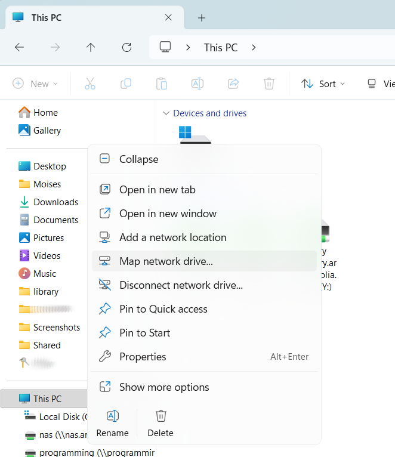
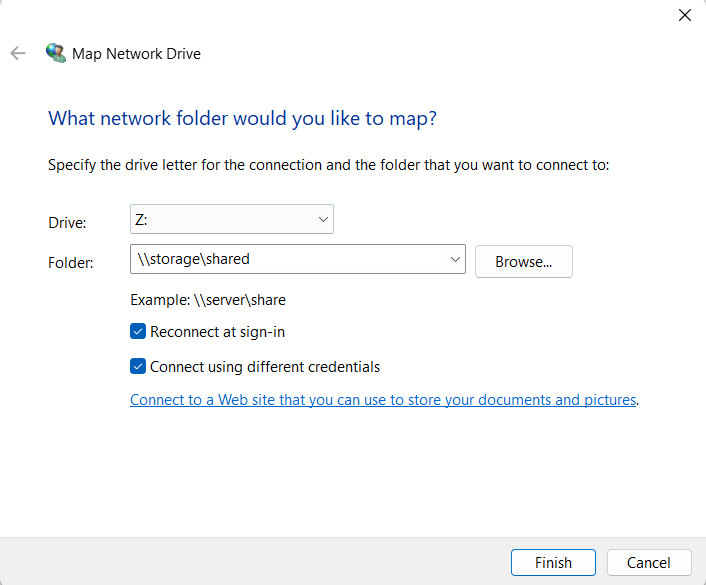
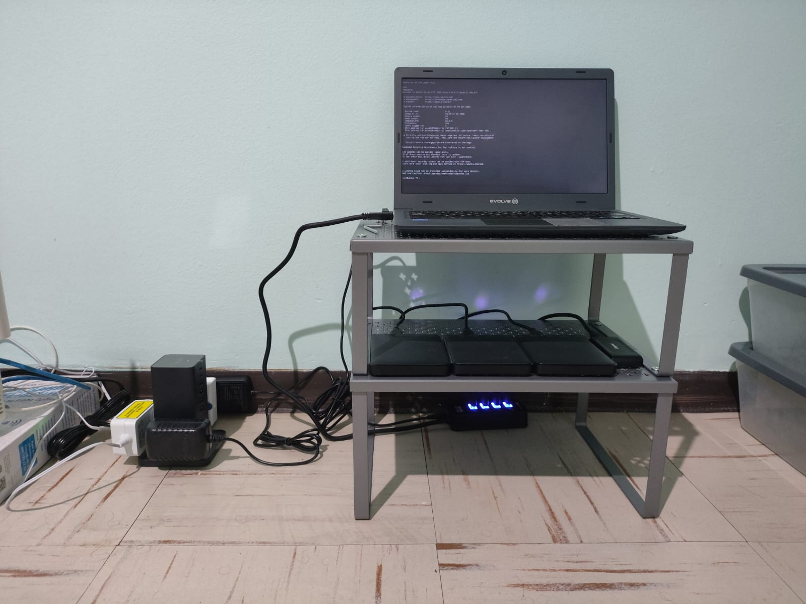

In this article I will walk through repurposing an old laptop and external hard drives into a local NAS device with multi-protocol access (NFS and SMB), redundant storage (RAID 5 Array) and redundant power sources (AC wall adapter and laptop battery).
In my case, I will be using an old quad-core Intel Celeron N3450 processor with 4G of Memory as my NFS/SMB server.
I will use three Western Digital 1 TiB hard drive disks. Prioritizing data availability and integrity over storage capacity, I will go for a RAID5 array with which a one disk can be lost at any given time without affecting data access.
I will also configure port forwarding on my home router and setup automatic updates of DNS records. I will be utilizing a small utility daemon for name.com and GoDaddy API that can be found here:
musoto96/Dynamic-IP-Updater.
It is useful to update dynamic IP addresses (such as the ones given by ISPs to home routers) on DNS records.
Additionally, we will be exploring a solution to manage power supply to avoid increased pressure on the battery from having it constantly at 100% charge, I will be using a TP-Link, Kasa Smart Wi-Fi Plug model EP10.
In the following link a daemon script can be found for Linux to toggle the AC plug on and off to maintain battery within a specific threshold (35 to 75 percent by default):
musoto96/Kasa-Linux-Powermon.
Table of contents
- Table of contents
- Creating a RAID array
- Setup NFS server
- Setup SMB server
- Benchmarking throughput
- Port forwarding and power management
- Updating DNS records
- Closing thoughts
Creating a RAID array
A RAID array can be created with either a hardware RAID card/controller or with software. A RAID controller comes with its own CPU and memory to offload disk array processing, they also can have a battery module to improve data integrity during a power outage.
Software RAID can be used in UNIX/Linux based operating systems with the mdadm binary. The manual entry for md Multiple Device Driver (man 4 md) provides general details about different RAID array types.
| RAID Level | Minimum disks | Optimal for |
|---|---|---|
| RAID0 | 2 | Performance, the disks are used in stripes |
| RAID1 | 2 | Redundancy, all data will be mirrored to the other disk |
| RAID4 | 3 | Performance + Redundancy at the expense of storage capacity, with three disks, only the capacity from two disks is effective for use |
| RAID5 | 3 | Same as RAID4 with better write parity workload distribution over the disks |
For more information on these and the other RAID levels please see the Wikipedia article on Standard RAID Levels
Note: The following steps will wipe the partition table and any data on the disks.
In my case, I partitioned my hard drives with one primary partition spanning the entire disk, with the fdisk utility:
root@storage:~# lsblk /dev/sdz /dev/sdaa /dev/sdab
NAME MAJ:MIN RM SIZE RO TYPE MOUNTPOINTS
sdz 65:144 0 931.5G 0 disk
└─sdz1 65:145 0 931.5G 0 part
sdaa 65:160 0 931.5G 0 disk
└─sdaa1 65:161 0 931.5G 0 part
sdab 65:176 0 931.5G 0 disk
└─sdab1 65:177 0 931.5G 0 part
root@storage:~# mdadm --create /dev/md0 --level=5 --raid-devices=3 /dev/sdz1 /dev/sdaa1 /dev/sdab1
It will take some time for the array to initialize, the progress can be monitored with mdadm --detail /dev/md0, after finished, it should show in a clean state.
After the array is created, a filesystem can be written to the md device (e.g. EXT4 or XFS) with
mkfs and then it can be mounted like a regular block device.
root@storage:~# lsblk /dev/md0
NAME MAJ:MIN RM SIZE RO TYPE MOUNTPOINTS
md0 9:127 0 1.8T 0 raid5 /NAS_Backup Setup NFS server
Network File System (NFS) protocol, more commonly used by Linux/UNIX systems can be set up by installing the respective package, nfs-kernel-server for Ubuntu, nfs-utils for Red Hat based Linux and, included by default in the FreeBSD base operating system.
The NFS directory that will be exposed for mounting is called an export, these are configured in /etc/exports. For example:
root@storage:~# cat /etc/exports
/shared 192.168.1.0/255.255.255.0(rw,sync,no_subtree_check)
will allow to mount /shared to 192.168.1.0/24 with read and write permissions, more information on the options and further examples are given in the manual page man 5 exports.
When there are changes to the /etc/exports file, the exportfs binary can be run with the -a option to refresh the exports. In FreeBSD the mountd service should be restarted:
root@client1:~ # service mountd restart
Stopping mountd.
Waiting for PIDS: 18204.
Starting mountd.
To mount on a client we can first use the showmount command to show exports available:
root@client1:~ # showmount -e 192.168.1.1
Exports list on 192.168.1.1:
/shared 192.168.1.0/255.255.255.0
/test 10.37.1.0/24/test export I will get a permission error, because this client is inside 192.168.1.0/24 network.
root@client1:~ # mount -t nfs 192.168.1.1:/test /mnt
[tcp] 192.168.1.1:/test: Permission denied
^C
root@client1:~ # mount -t nfs 192.168.1.1:/shared /mnt
root@client1:~ # df -h /mnt
Filesystem Size Used Avail Capacity Mounted on
192.168.1.1:/shared 27G 14G 11G 55% /mnt
root@client1:~ #
A note on troubleshooting NFS mounts
If an error is seen during mounting, consider looking at the logs on the NFS server such as:
- In Ubuntu
/var/log/syslog - Output of
dmesg - Output of
journalctl -xe
Mounting with maximum verbosity (-vvv option) and Kernel messages on the client may also reveal some information about the error.
Setup SMB server
Server Message Block (SMB) protocol more commonly used by Windows systems (it is also sometimes referred to as CIFS, a dialect of SMB), an SMB server can be configured via the samba package, and for mounting SMB protocol on a Linux/UNIX system the cifs-utils package is needed.
After installing the SMB server package the main configuration file is located under /etc/samba/smb.conf if LDAP is not needed for authentication, then most of these settings can be left as they are, to create a share an entry like the following example should be created:
root@storage:~# cat /etc/samba/smb.conf
...
[shared]
valid users = root msoto nobody
comment = My shared directory
path = /shared
read only = no
browsable = yes
writeable = yes
This will create a share called shared under the path /shared, in Read/Write mode and accessible to the users root, msoto and nobody, this controls who can mount the share, there are also permissions for each file and directory that will be evaluated on access.
More information and examples under the manual page man 5 smb.conf.
To mount on a Windows client
-
Create a local user which will be used for authentication to the SMB server e.g.:
root@storage:~# id msoto uid=1000(msoto) gid=1000(msoto) groups=1000(msoto),4(adm),24(cdrom),27(sudo),30(dip),46(plugdev),101(lxd) -
And create an SMB password for it:
root@storage:~# smbpasswd msoto New SMB password: Retype new SMB password: -
Open File Explorer, right click on
My PCand selectMap Network Drive...

-
Type the address or hostname followed by the share name in the format:
\\ipaddr_or_hostname\share_name
In this example,share_nameis not the path for our SMB share, but rather the name enclosed by square brackets insmb.conf

-
Select
Connect using different credentials, if network connectivity is fine, a new window should appear asking for user and password. -
Enter the credentials previously configured with
smbpasswd
Benchmarking throughput
The Flexible I/O tool (FIO) is used for running different types of simulated Input/Output operation workloads on a device, it can be run by providing arguments inline or by passing a job file. There are four general tests we can do to characterize performance:
- Random reads
- Random writes
- Sequential reads
- Sequential writes
For these tests, I will create a 10G file with dd with random bytes:
root@storage:~ # dd if=/dev/urandom of=/NAS/bigfile.dat bs=1M count=10240 status=progress
10584326144 bytes (11 GB, 9.9 GiB) copied, 46 s, 230 MB/s
10240+0 records in
10240+0 records out
10737418240 bytes (11 GB, 10 GiB) copied, 46.6889 s, 230 MB/s
The following FIO jobs can be saved to a file and be run as fio jobfile.fio
Random reads job file.
[global]
filename=/NAS/bigfile.dat
ioengine=libaio
direct=1
time_based=1
runtime=60
[randread]
rw=randread
bs=4k
iodepth=32Random writes job file.
[global]
filename=/NAS/bigfile.dat
ioengine=libaio
direct=1
time_based=1
runtime=60
[randwrite]
rw=randwrite
bs=4k
iodepth=32Sequential reads job file.
[global]
filename=/NAS/bigfile.dat
ioengine=libaio
direct=1
time_based=1
runtime=60
[read]
rw=read
bs=1M
iodepth=32Sequential writes job file.
[global]
filename=/NAS/bigfile.dat
ioengine=libaio
direct=1
time_based=1
runtime=60
[write]
rw=write
bs=1M
iodepth=32Port forwarding and power management
An SSH tunnel can be used for occasional file access outside of the local network, for NFSv3 or access to additional ports an OpenVPN server would be a better alternative.
An SSH port should only be exposed to the internet when password authentication is disabled, i.e. authenticating with a private key.
The following example command would forward socket on localhost:445 on the remote system to port 3445 locally
ssh -N -p 3022 -i C:\Users\user\.ssh\ip_rsa -L 3445:localhost:445 root@storage.mydomain.comlocalhost:3445 and map the shares.
I wanted to avoid unnecessary pressure on the battery from having it constantly at 100% charge, so I used a smart AC plug from TP Link, and based on battery level, AC power is turned on and off to have charge between 35% and 75%.
The script runs as a systemd daemon, battery threshold ranges, and the battery path, can be modified as needed. The script can be found here: musoto96/Kasa-Linux-Powermon.
Updating DNS records automatically
For accessing the system over WAN, we need to know the public IP assigned by the Internet Service Provider. While some routers have DDNS clients that can update a DNS record with the IP address assigned to the WAN interface, for quick setups, I like to use another utility script that also runs as a systemd daemon.
It currently works for name.com and GoDaddy API and it will check and update a DNS record every three minutes. More details about its usage and configuration can be found here:
musoto96/Dynamic-IP-Updater.
Closing thoughts
There is great value in setting up a NAS from scratch as described in this article, it helps with becoming familiar with storage protocols and how access to shared file storage works. It is likely that file ownership and permissions will have to be considered specially if the storage is used from multiple clients. In this case, permissions are based on UNIX ACLs.
This was a project I had done in mid 2025, but I just got around to finish writing the last entries of the article, this is a picture I took of the setup:

Since then, I have moved on to a more robust setup using old hardware, a Cisco UCS 220 m3 and a NetApp DS2226 connected with an LSI sas9207 8E HBA.
I am working on another article, where I will cover a multi-protocol NAS setup in FreeBSD with a ZFS array, connecting it to a Microsoft Active Directory and accessing the Shares with LDAP credentials, stay tuned for that.